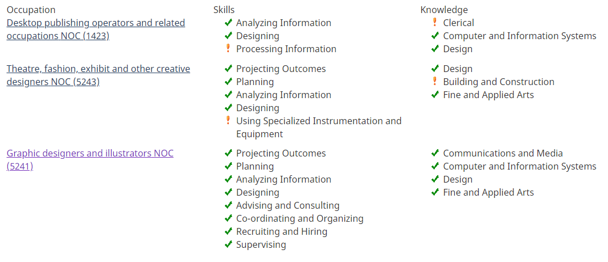
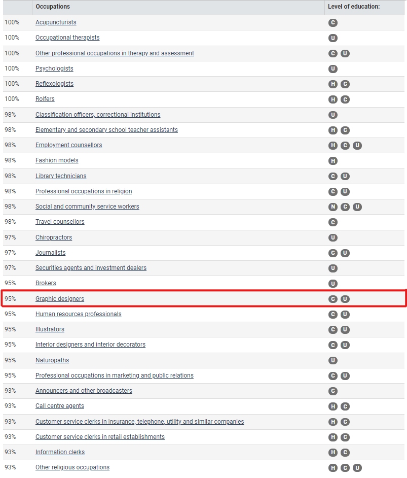

The manufacturing and manipulation of websites for organizations and individuals wanting to promote their brand
Entry Requirements:
Understanding in HTML & CSS programming
Fluent enough to create a functioning website
Post Secondary:
Bachelors in computer science
Visual arts degree
Specific fields for certain applications
Additional Requirements
Able to use collaborative systems like github
Prepare sketches, layouts, and graphic elements
Storyboards
Essential Skills:
Communicate with clients to understand want they want
Analyzing information
Planning
Creative expression
Skills & Knowledge Checklist:

Careers Quiz Results:

Portfolio:
The first page as you saw it was my reference. Although it didn't showcase the entire grasp of what I can do. Colour changes, CSS, tables, extra formatting. There was little space (time) for these many things